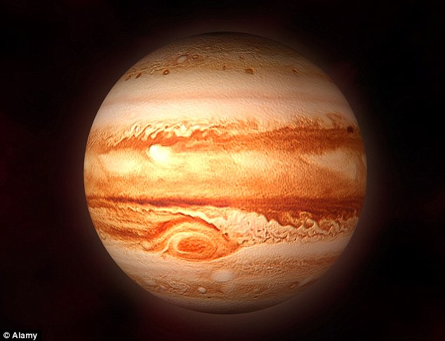

The most massive planet in our solar system -- with dozens of moons and an enormous magnetic field -- Jupiter forms a kind of miniature solar system. It resembles a star in composition, but did not grow big enough to ignite. The planet's swirling cloud stripes are punctuated by massive storms such as the Great Red Spot, which has raged for hundreds of years.
10 Need-to-Know Things About the Jupiter:
- If the sun were as tall as a typical front door, the Earth would be the size of a nickel and Jupiter would be about as big as a basketball.
- Jupiter orbits our sun, a star. Jupiter is the fifth planet from the sun at a distance of about 778 million km (484 million miles) or 5.2 AU.
- One day on Jupiter takes about 10 hours (the time it takes for Jupiter to rotate or spin once). Jupiter makes a complete orbit around the sun (a year in Jovian time) in about 12 Earth years (4,333 Earth days).
- Jupiter is a gas-giant planet and therefore does not have a solid surface. However, it is predicted that Jupiter has an inner, solid core about the size of the Earth.
- Jupiter's atmosphere is made up mostly of hydrogen (H2) and helium (He).
- Jupiter has 50 known moons, with an additional 17 moons awaiting confirmation of their discovery -- that is a total of 67 moons.
- Jupiter has a faint ring system that was discovered in 1979 by the Voyager 1 mission.
- Many missions have visited Jupiter and its system of moons. The Juno mission will arrive at Jupiter in 2016.
- Jupiter cannot support life as we know it. However, some of Jupiter's moons have oceans underneath their crusts that might support life.
- Jupiter's Great Red Spot is a gigantic storm (bigger than Earth) that has been raging for hundreds of years.